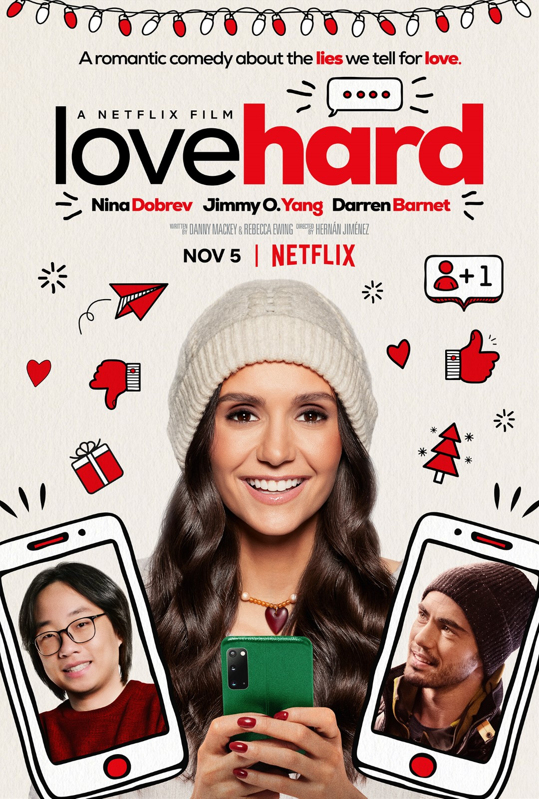
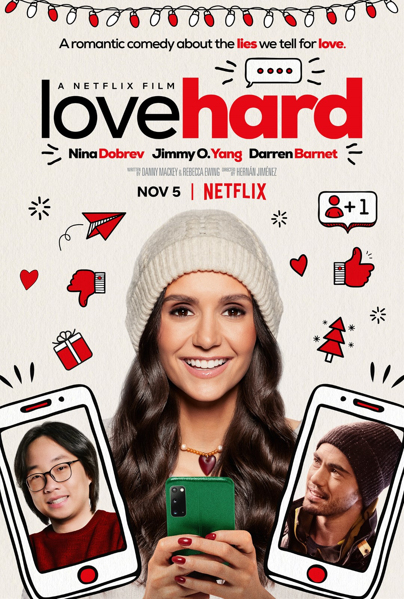

A comédia romântica trata-se de um subgênero da comédia e do romance, onde elementos dos dois se misturam para
formá-lo. A partir disso, o subgênero data-se muito anteriormente ao surgimento do cinema, sendo William
Shakespeare e suas peças de teatro do século XVI, como Um Sonho em uma Noite de Verão, um dos pais da comédia
romântica.
Uma personalidade muito influente para a comédia como um todo, Shakespeare moldou a estrutura básica
das comédias românticas em algumas de suas obras. Esse gênero teria nascido nos anos 20 entre os três grandes
nomes da comédia americana nessa época: Buster Keaton, Harold Lloyd e Charles Chaplin.
Buster Keaton, por exemplo, lançou no ano de 1924, Sherlock Jr, onde um projetista e faxineiro de cinema, que sonha em ser um detetive, se apaixona por uma jovem.
Já Harold Lloyd foi responsável, também em 1924, por O Maricas, esse contando a história de um aprendiz de alfaiate tímido com mulheres que decide escrever um manual chamado “O Segredo de Fazer Amor”.
Luzes da Cidade, de Charles Chaplin, foi um marco na história da sétima arte, um dos últimos grandes filmes mudos, de 1931, e uma das maiores comédias no geral de todos os tempos. O principal se apaixona por uma jovem florista cega nas ruas da cidade.
Os filmes de comédia romântica, são mais assistidos por adolescentes(onde estão recém
aprendendo sobre relacionamentos), na maioria das vezes seguem uma estutura parecida: duas pessoas se conhecem;
cresce um sentimento, mas há um obstáculo que impede de os dois ficarem juntos; solucionam o problema;
e vivem felizes para sempre.
Porém, mesmo com uma sequência tão conhecida, o gênero oferece variações que
podem agradar todo o tipo de gosto. Há filmes mais doces, mais clássicos, melancólicos e até
trágicos. Seja qual for, sempre haverá um que irá nos prender na trama. Mas Hollywood não tem mais
interesse nesse tipo de gênero, os principais fatores são:
A principal, Liz Gilbert, desiste de seu casamento e um affair, para encontrar a si mesma em uma jornada espiritual por três países diferentes.
Gretta, uma cantora que toma um fora do namorado rockstar, quando ele se deslumbra pelo sucesso na carreira. Enquanto isso, ela descobre que é uma excelente compositora, com talento pra virar estrela, mas que prefere fazer música com qualidade do que o estrelato imediato.
Elle Woods namora o mais bonito garoto de seu colégio. O grande problema é que ele considera Elle muito fútil. Ele decide estudar Direito na Universidade de Harvard, termina o relacionamento com Elle e começa a namorar uma nova garota. Elle não se dá por vencida e decide estudar a fim de também passar para o curso de Direito e ainda por cima provar sua inteligência.
Andy se afasta do namorado e amigos para conseguir uma carreira incrível como jornalista. Por mais que não goste do emprego, ela precisa encarar os desafios para chegar onde quer.

Padgett Sawyer, uma influenciadora digital que precisa cumprir um grande desafio: transformar o antissocial e estranho Cameron no garoto mais popular da escola.
Abby é convidada para passar o Natal com os pais da companheira e se prepara para pedi-la em casamento, mas não sabe que ela ainda precisa "sair do armário". Assim, as duas começam por esconder a relação, fingindo que são apenas amigas.
Jodi sofre bullying por ser a garota mais alta de sua escola. Mas quando surge um intercambista sueco mais alto que ela, pensa que essa é sua chance de sair dos holofotes por conta de sua altura. Porém com a ajuda de sua irmã e amigos, ela irá perceber que sua aparência não é o que realmente importa.
Gabriela Diaz, uma executiva de San Francisco ganha uma pousada na Nova Zelândia e deixa a vida na cidade grande para reformar a propriedade e vendê-la, mas seus planos parecem mudar com a ajuda de um empreiteiro bonitão.
O adolescente Simon, vive uma vida comum, mas sofre por esconder de sua família e amigos que é gay. E tudo piora quando ele se apaixona por seu colega de escola, anônimo, com quem conversa pela internet.
Jane é uma madrinha de casamento excelente que costuma sonhar com a cerimônia perfeita. Ela sempre coloca a necessidade dos amigos em primeiro lugar, e acaba sendo a pessoa que todos procuram na hora de planejar um casamento. Mas quando sua irmã mais nova, conquista o homem que ela ama secretamente, ela passa a questionar o seu papel de boazinha e generosa.
Jenna Rink é uma garota que está descontente com sua não popularidade. A única amizade que possui é Matt, seu vizinho. No seu aniversário, ela faz um pedido: virar adulta. O pedido se realiza e, no dia seguinte, Jenna acorda com 30 anos de idade. Inicialmente assustada, ela vai ficando cada vez mais encantada por ter se tornado o que sempre sonhou ser. Porém nem tudo acaba saindo como esperado.
Ben é um publicitário que aposta que faz qualquer mulher se apaixonar por ele em dez dias. Se conseguir, será o responsável por uma campanha de seu trabalho. Andie é uma jornalista que, por causa de uma matéria, está decidida a atormentar a vida de qualquer homem que se aproximar. Os dois se conhecem e escolhem um ao outro como alvo de seus planos.
Cher é a garota mais popular de sua escola, em Beverly Hills. Ela decide fazer boas ações e começa bancando o cupido para dois professores do colégio que, eventualmente, começam a namorar. Empolgada com o resultado, Cher resolve fazer uma transformação em uma nova estudante um pouco cafona. Mas quando a amiga se torna mais popular do que ela, a menina rica fica decepcionada.

Durante uma viagem de negócios, Edward, um executivo, encontra uma acompanhante de luxo, Vivian. Edward a contrata para ficar com ele durante uma semana a fim de acompanhá-lo nos jantares de negócios. Os dois se aproximam e descobrem que há vários obstáculos para serem superados até que possam ficar juntos.